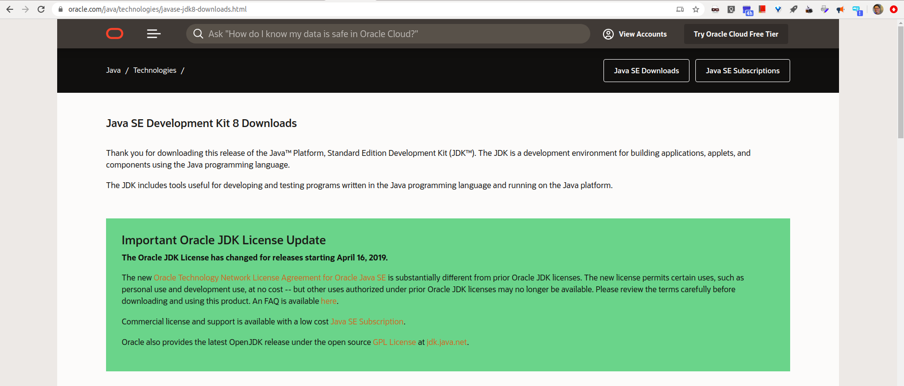
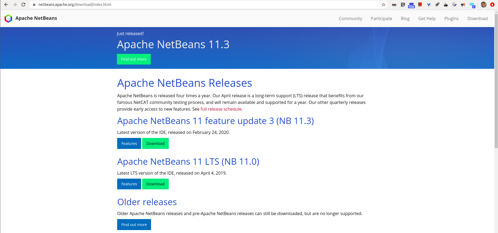
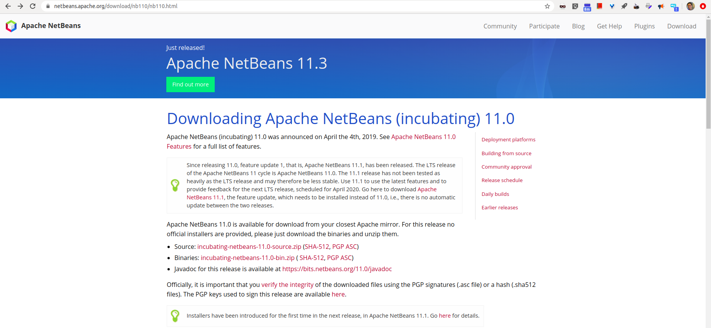
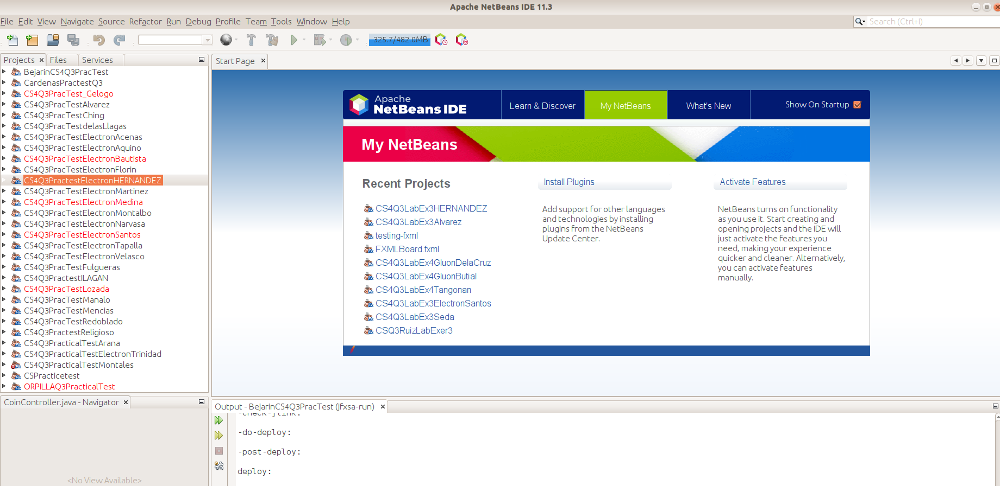
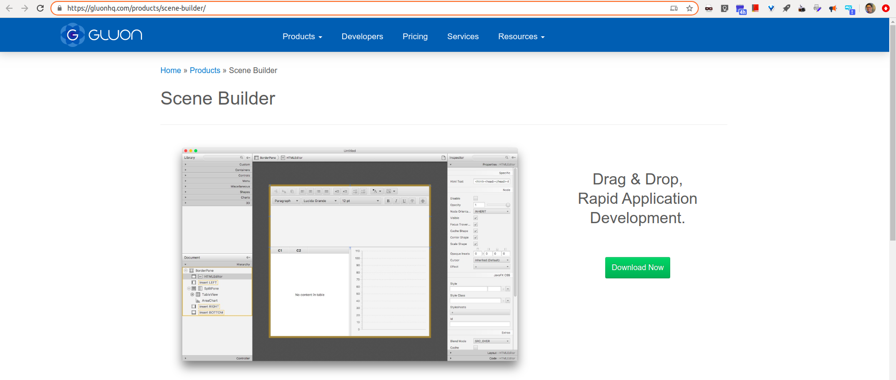
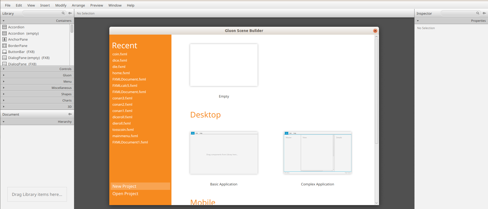
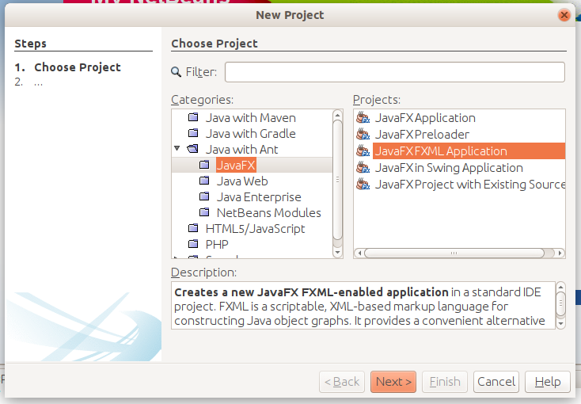
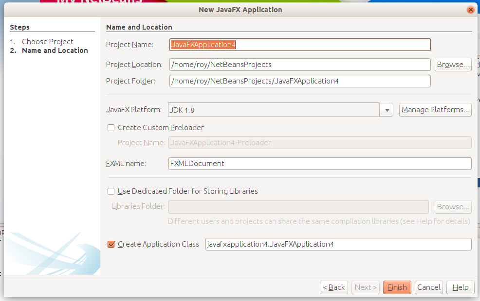
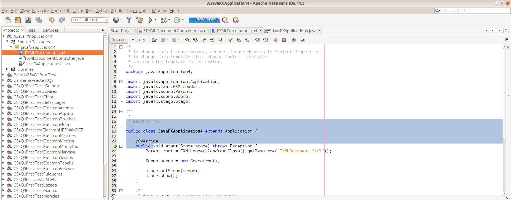

How to setup Java FXML with Netbeans and Scene Builder in Ubuntu 18.04
A guide for my students in Computer Science
Download Oracle JDK 1.8
- this has javafx automatically included to it.
- it's free
- you'll need to sign up, but other alternatives are way harder to do
- JDK 1.8 is also know as JDK 8
- We can also use higher versions of java, but we'll need more complicated build tools like maven or gradle to work with JavaFX. We want Java 8 so we can stick to the default ANT build tool.
To install NetBeans, you have to download it first from the Oracle official website:
https://www.oracle.com/java/technologies/javase-jdk8-downloads.html

- Scroll down until you find the right download for your machine
- Download and install or unzip
Install NetBeans
To install NetBeans, you have to download it first from the NetBeans official website:
https://netbeans.apache.org/download/index.html
- Click on the green “Download” button under the Apache NetBeans LTS line
-
You can also learn more about NetBeans by clicking the blue “Features” button next to the “Download” button.

-
You can also download other previous versions as well but its recommended to use the latest version.
- This will take you to a page titled “Downloading Apache NetBeans (incubating)”.
-
From this page, click on the “Binaries” link. You can click the “Source” link and download that if you want to compile it yourself but downloading the “Binaries” is faster and easier.

-
Once clicked, this will redirect you to the apache page where a link will be generated for you.
- Click the link and it will start downloading.
- Install or unzip and run. You might be asked for the version of JDK to use. Make sure it's JDK 1.8 by pointing to the directory where you it's installed
- If you are greeted with this view once it opens, then NetBeans has been successfully installed and is ready for you to start writing programs and developing applications on it.

Install the JavaFX Scene Builder
Now that NetBeans has been successfully installed and is working properly, we can move to the next step; install JavaFX Scene Builder.
First, we have to download Scene Builder from its official website:
https://gluonhq.com/products/scene-builder/#download

- On this page, scroll down until you see the download options for your version of Java (Java 8).
- Look for the right Scene Builder version for your operating system and click the green “Download” button.
- This will redirect you to a “Thanks” page and start downloading.
- Once downloaded, open the installer.
- In the installer, accept the terms and conditions and click install.
- Once installed, click finish. To check whether the installation was successful or not you can open “SceneBuilder” and will be greeted with the following view if the installation was successful:

Integrate JavaFX Scene Builder and NetBeans
Once Scene Builder and NetBeans have been installed, it is time to move to the final step; integrate both the programs.
- Open NetBeans,
- click on “File” and then “New project.” in the dropdown menu. A new window will open.
-
Click on “JavaFX” from the “Categories” tab and “Java FXML Application” from “Projects” tab.
 4. Click “Next”. 5. Install any modules, if it prompts to download and activate any modules. In the next window give the project a name and click “Finish”.
 6. Once opened, go to the “Projects” tab and click on your project. 7. Then click on “Source Packages”, 8. click on your project’s package, 9. right-click on the .fxml file and click “Open”. 10. This will open the file in Scene Builder for you to work on it.

Next Steps
And with this, you have successfully integrated Scene Builder and NetBeans to work together seamlessly. Once you are done with making the GUI, to add functionality and logic to it, edit the “Controller.Java” file directly below the .fxml file and give it functionality. Now you can go on and enjoy making GUI for your programs in an intuitive and fun way using JavaFX Scene Builder.